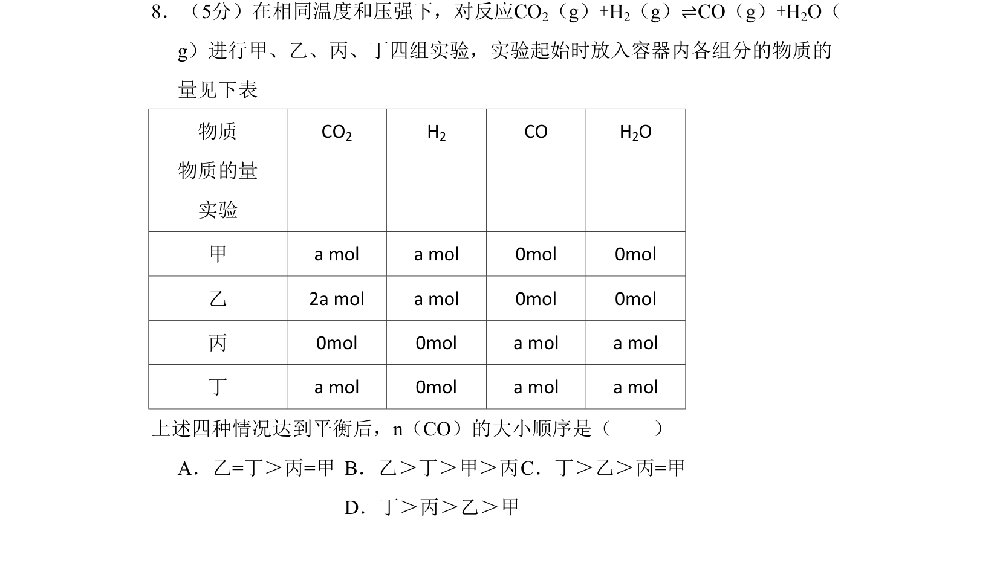
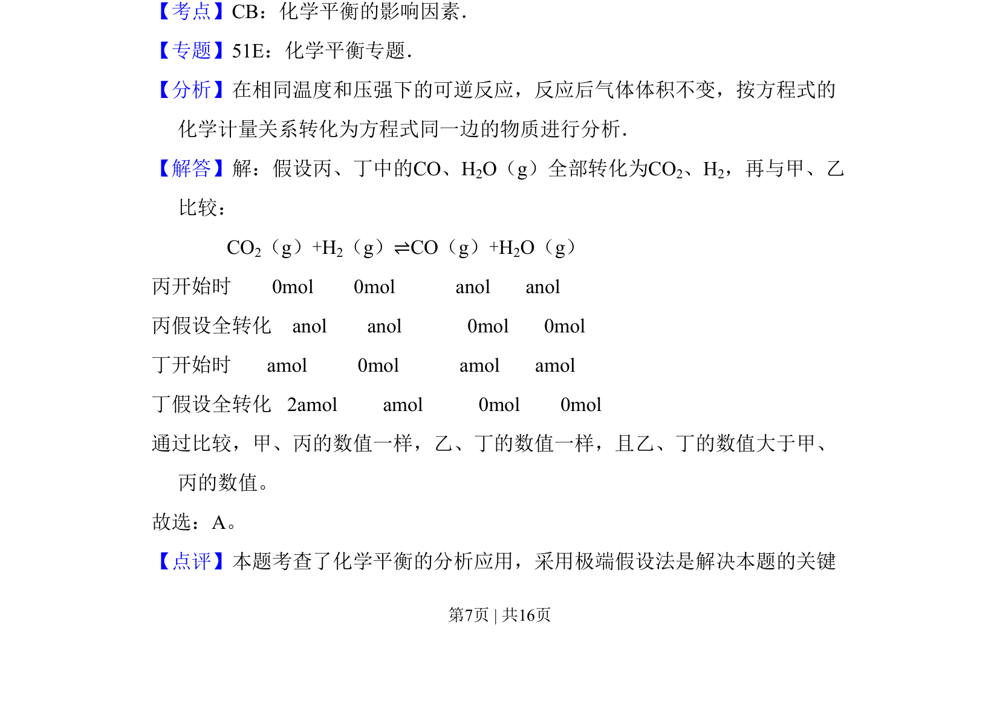
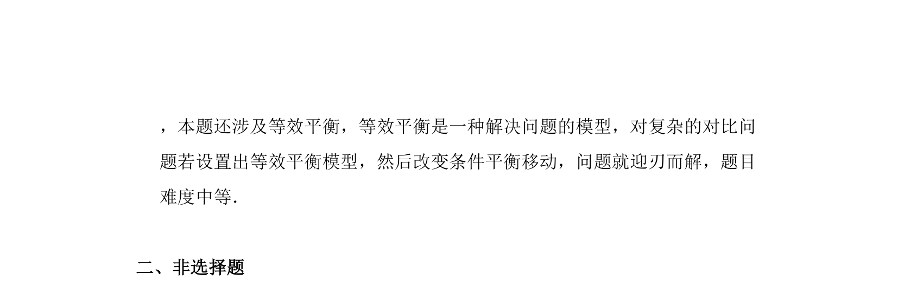

考点：化学平衡影响因素 极端假设法 等效平衡

该题通过极端假设法比较不同初始投料下化学平衡后CO物质的量大小


📄 原 PDF 第 7 页：
素材/真题/吉林/2008-2024·（吉林）化学高考真题/2008年高考化学试卷（全国卷Ⅱ）（解析卷）.pdf
8．（5分）在相同温度和压强下，对反应CO2（g）+H2（g）⇌CO（g）+H2O（ g）进行甲、乙、丙、丁四组实验，实验起始时放入容器内各组分的物质的 量见下表 物质 物质的量 实验 CO2 H2 CO H2O 甲 a mol a mol 0mol 0mol 乙 2a mol a mol 0mol 0mol 丙 0mol 0mol a mol a mol 丁 a mol 0mol a mol a mol 上述四种情况达到平衡后，n（CO）的大小顺序是（ ） A．乙=丁＞丙=甲B．乙＞丁＞甲＞丙C．丁＞乙＞丙=甲 D．丁＞丙＞乙＞甲
【考点】CB：化学平衡的影响因素．菁优网版权所有 【专题】51E：化学平衡专题． 【分析】在相同温度和压强下的可逆反应，反应后气体体积不变，按方程式的 化学计量关系转化为方程式同一边的物质进行分析． 【解答】解：假设丙、丁中的CO、H2O（g）全部转化为CO2、H2，再与甲、乙 比较： CO2（g）+H2（g）⇌CO（g）+H2O（g） 丙开始时 0mol 0mol anol anol 丙假设全转化 anol anol 0mol 0mol 丁开始时 amol 0mol amol amol 丁假设全转化 2amol amol 0mol 0mol 通过比较，甲、丙的数值一样，乙、丁的数值一样，且乙、丁的数值大于甲、 丙的数值。 故选：A。 【点评】本题考查了化学平衡的分析应用，采用极端假设法是解决本题的关键